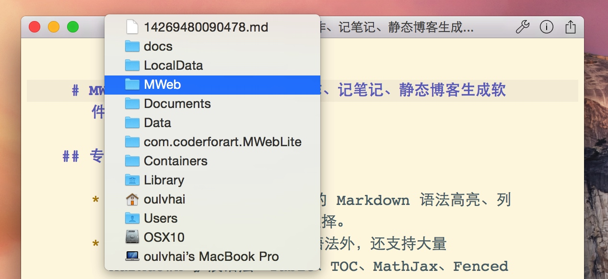
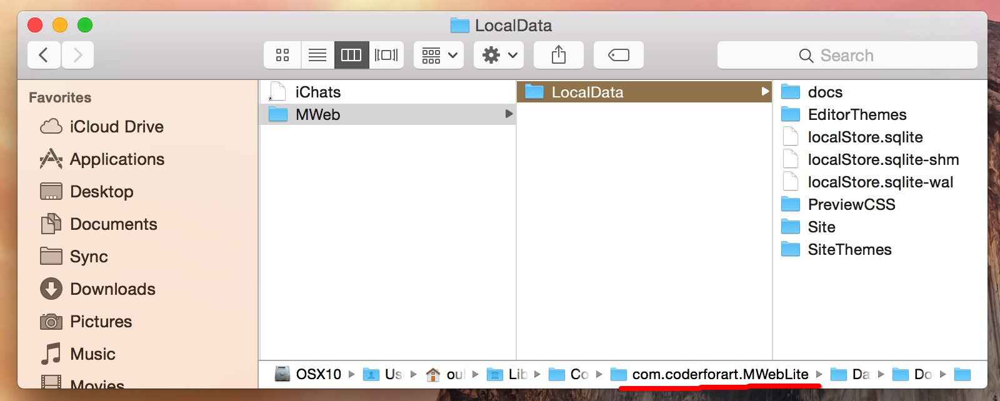
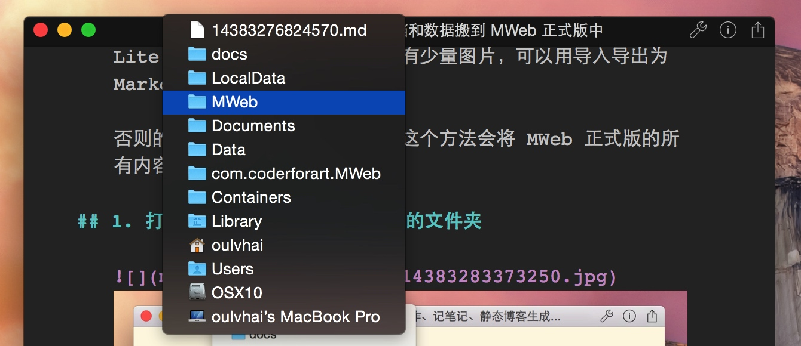
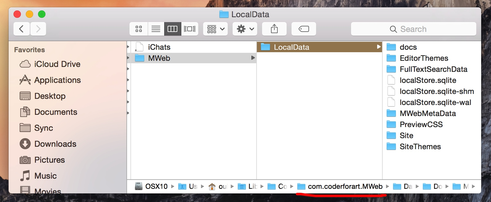

把 MWeb Lite 的文档库文档和数据搬到 MWeb 正式版中
MWeb Lite 版的文档库中的文档要搬到 MWeb 正式版中，如果 Lite 版的文档中没有图片或者只有少量图片，可以用导入导出为 Markdown 的方法。
否则的话请用以下方式（注意下面这个方法会将 MWeb 正式版的所有内容都换为 Lite 版）：
1. 打开 Lite 版文档库文档所在的文件夹

如上图，选择 Lite 版文档库中的任何一篇文章，右键标题栏，从图中可以看到这个文档的保存位置，选择 MWeb 并点击，会打开 Lite 版文档库中的文档所保存的位置，会打开如下图的 Finder 窗口：

请注意上图中选中的 LocalData 文件夹，文档库中的所有数据都在这里。
2. 打开 MWeb 正式版文档库文档所在的文件夹

如下图，同样选择 MWeb 并点击就可以了，会打开如下图的 Finder 窗口：

请注意上图中选中的 LocalData 文件夹，文档库中的所有数据都在这里。
3. 搬移 Lite 版的数据到 MWeb 正式版中
重要：下面的操作前，请一定要先备份好 MWeb 正式版的 LocalData 文件夹。
- 退出 Lite 版和正式版 App，注意是退出
CMD + Q。 - 要搬移 Lite 版的数据到正式版中，非常简单，就是将 Lite 版的
LocalData文件夹换到正式版中即可。所以就是删除正式版的LocalData文件夹，然后把 Lite 版的LocalData文件夹复制进来。 - 重新启动 MWeb 正式版。
- 搬移完成！